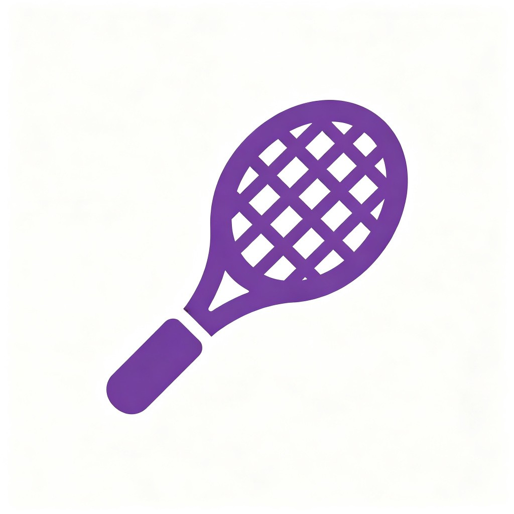
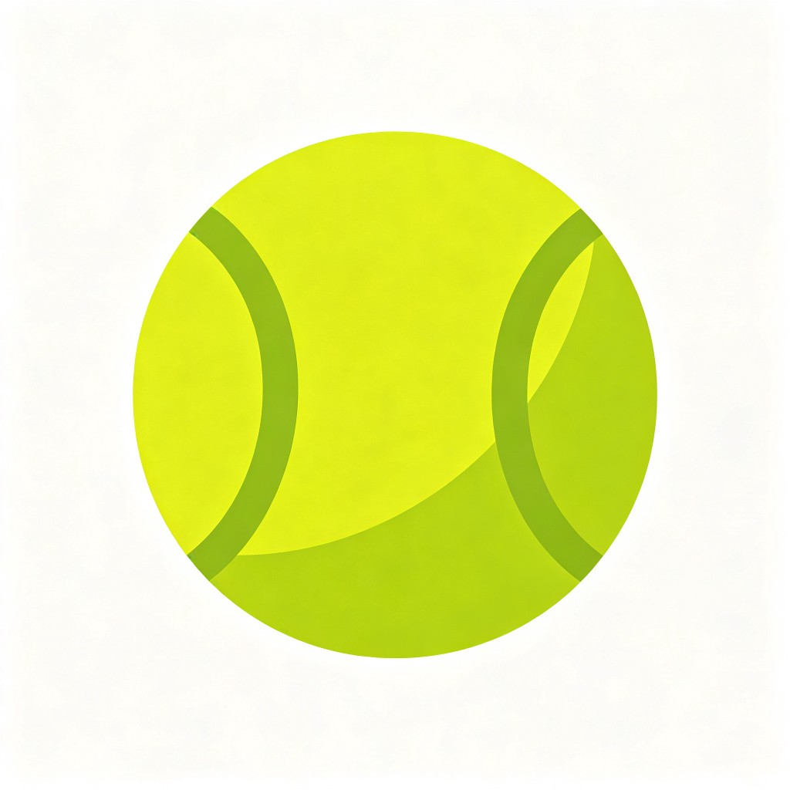
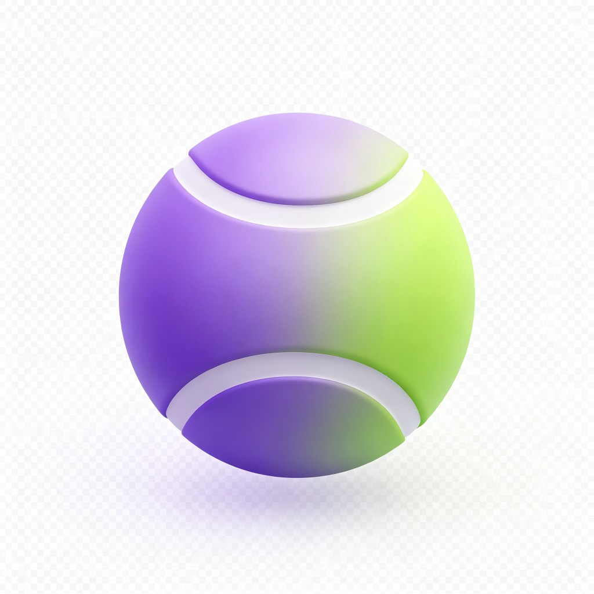

动搭
AI 网球陪练与成长系统
动作教程
分步动作指导
AI拍照检测纠正
基础知识
装备选择与规则
网球入门必备
日程定制
水平测试评估
AI生成练习计划
找陪练
发布陪练需求
匹配附近球友
📊 今日概览
1
坚持天数
0
练习次数
1/5
教程进度
进入教程练习 →
动搭
AI 网球陪练与成长系统
准备开始
握拍
站位
挥拍
抛球
击球
0
累计练习
0
连续天数
🎨 还没有训练记录，点击"继续训练"开始第一条教程吧！
继续训练
查看成长
语音指导
重置进度
演示模式
第 1 步 / 5
上一步
下一步
点击暂停/播放
动画要点
握拍
掌握正确的握拍方式
动作要领
⚠️ 常见错误
去练习
练习
练习
第 1 组
30
准备开始
语音指导中...
开始练习
跳过
🎯 动作检测
拍照检测
选择拍照或上传图片
请站在距离镜头 2-3 米处，身体侧面朝向镜头
拍照检测
选择本地图片
取消
开始分析
重新拍照
跳过检测
分析结果
动作标准
你已完成本次检测
继续
恭喜解锁!
你已完成本步骤
继续下一关
成长数据
0
累计练习
0
连续天数
0
已完成步骤
0
拍照通过
步骤进度
返回首页
基础知识
🎾 认识装备
📜 网球规则

球拍选择
拍面大小
初学者选100-110平方英寸的大拍面，甜区更大、容错率更高。进阶后可缩小到95-100平方英寸，控制力更强。
拍柄尺寸
握住拍柄后，另一只手应能插入食指。亚洲人通常选1-2号柄。太大易磨手，太小握不稳。
球拍重量
初学者选280-300克（空拍），太轻击球无力，太重手腕负担大。可先用轻拍练动作，再逐步加重。
拍线选择
初学选软线或多股线，手感柔和、保护手臂。线床密度16x19旋转好，18x20控制强。磅数50-55为宜。

网球选择
训练球 vs 比赛球
训练球更耐打但弹跳不规则；比赛球（如Wilson US Open、Dunlop ATP）手感一致，建议练习也用比赛球养成手感。
球压与保存
新球气压足弹跳高，打2-3小时后气压下降成为"死球"。不用的球存放在密封罐中可延长寿命。旧球可用来喂球练习。
📜 计分规则
1
局（Game）
0分=Love，15分=15，30分=30，40分=40。赢得1球得15分，但40-40（Deuce）后需连赢2球才能拿下该局（占先+赢分）。
2
盘（Set）
先赢6局且领先2局者拿下该盘。若6-5则继续打到7-5或进入抢七（Tiebreak）。一盘最多打13局（7-6抢七）。
3
赛（Match）
男子大满贯五盘三胜，其他比赛三盘两胜；女子统一三盘两胜。
📜 场地与发球
4
发球规则
每局第一分从右区发，交替左右区。有两次发球机会，两次失误为"双误"丢分。发球必须落在对角发球区内。
5
压线球
球落在线（包括线宽）上算界内。鹰眼挑战可用于判断争议球。
6
擦网（Let）
发球擦网后落入有效区域，判重发，不算失误。比赛中途球碰网后落入对方场地算有效球。
📜 比赛礼仪
7
换边休息
每盘第1局后、之后每隔2局换边。每盘结束后休息2分钟，每盘第6局后可休息90秒（大满贯）。
8
场上礼仪
对方准备发球时保持安静；球滚入邻场时等该分结束再捡球；赢球不过度庆祝，输球与对方握手致意。
定制练习日程
🎯 测试当前水平
诚实地评估自己，AI将据此生成最合适的练习计划
1. 你打过网球吗？
完全零基础
偶尔打过
经常打
2. 能连续对墙击球吗？
还不能
5-10次
10次以上
3. 能稳定发球吗？
还不能
有时能过网
能发到对角
下一步
🎯 设定练习目标
你想在多久后达到什么水平？
能跟朋友对打
能稳定拉球
能打小型比赛
每周哪几天可进行练习？
周一
周二
周三
周四
周五
周六
周日
每次练习多长时间（小时）？
1小时
1.5小时
2小时
3小时
AI生成日程
📅 你的专属练习日程
📅 导入练习日历
重新生成
找陪练
📍 附近陪练需求
+ 发布需求
✎ 发布陪练需求
时间
地点
你的水平
初学者
中级
高级
费用/AA
需求描述
发布
取消
个人中心

网球新手
🏆 初学者
📈 训练数据
0
累计训练(天)
0
完成动作(个)
0
总时长(分钟)
🏅 我的等级
完成 0/5 个动作，继续加油！
📅 练习日历
查看今日练习任务
›
🤝 我的陪练
⚙ 设置
语音播报
🗑 清空所有数据
›
关于动搭
v1.0
练习日历
‹
›
🌞 今日任务
📅 任务列表
全部
待完成
已完成
调整日期
取消
确定
首页
教程
知识
日程
陪练
我的
选择练习周期
开始日期
结束日期
取消
确认导入